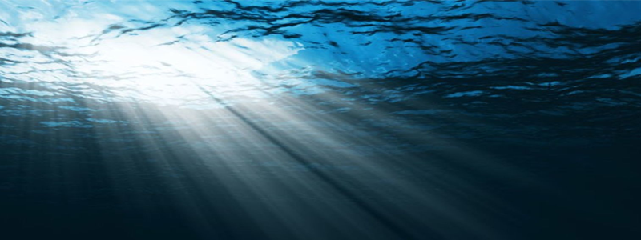

Conectando con el Mar
1. La calma tras la tormenta
Cuando pensamos en el mar, es fácil imaginarlo como un vasto espacio lleno de tranquilidad. Pero también sabemos que el mar puede ser impredecible, con tormentas que surgen sin previo aviso. Sin embargo, después de la tormenta, siempre llega la calma. Esta es una lección valiosa: en la vida, aunque enfrentes momentos difíciles y desafiantes, sabes que siempre llegará la paz y el equilibrio.
2. La constancia de las olas
Las olas del mar nunca dejan de venir, una tras otra, sin importar las dificultades. Esta constancia es una enseñanza poderosa sobre la perseverancia. No importa cuántas veces las olas rompan en la orilla, siempre vuelven. Así es como debemos enfrentar nuestros desafíos: con constancia y determinación, sabiendo que cada paso adelante, por pequeño que sea, nos acerca más a nuestras metas.
3. La conexión con la naturaleza
Estar cerca del mar tiene un poder restaurador. Nos conecta con algo más grande que nosotros mismos, y nos recuerda la importancia de estar presentes. Al igual que el mar, nosotros también somos parte de un ciclo continuo. Al conectar con la naturaleza, encontramos el espacio necesario para relajarnos, reflexionar y dejar atrás las tensiones. En momentos de dificultad, acudir a un lugar natural, como la orilla del mar, puede darnos la perspectiva que necesitamos para seguir adelante.
Volver al blog